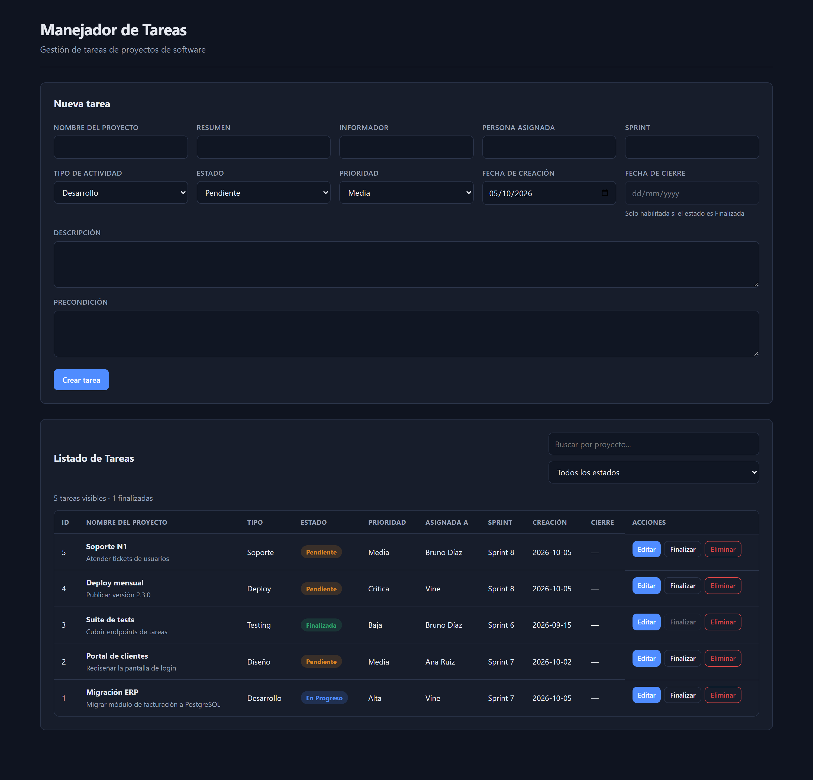
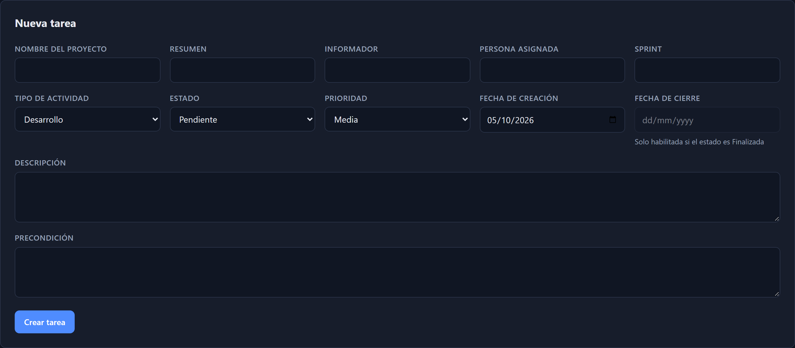
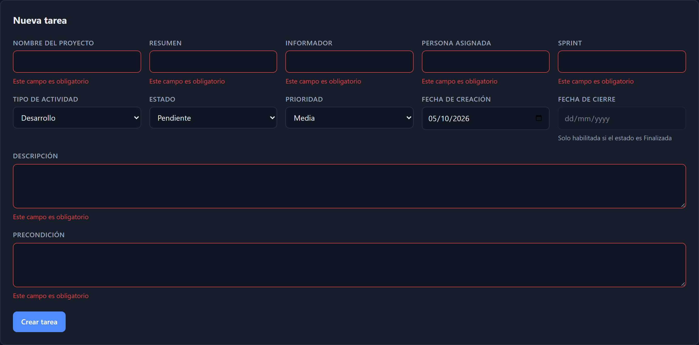
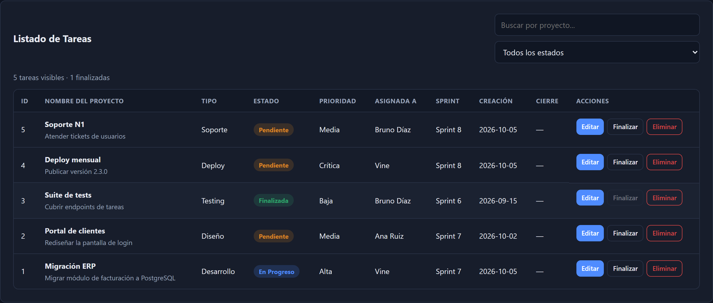
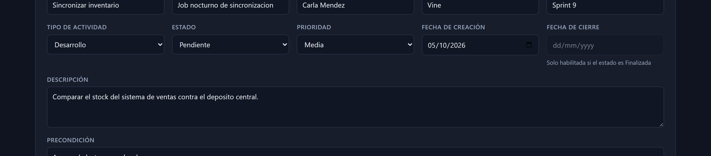
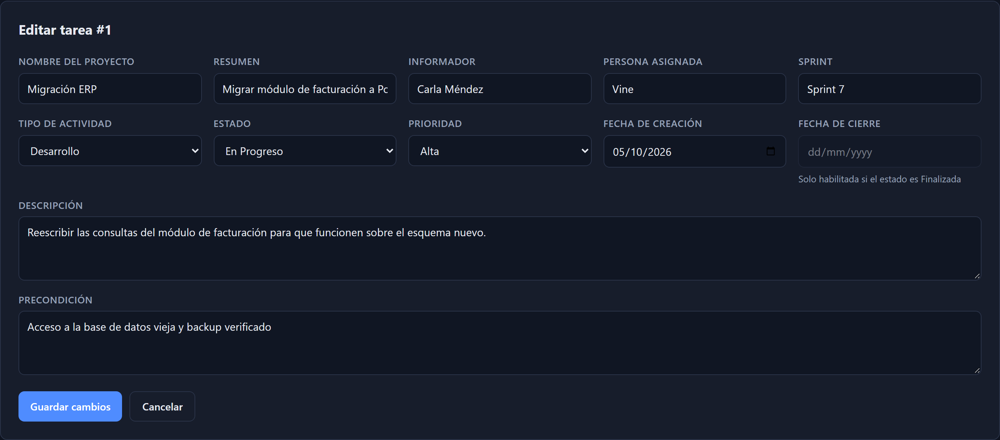
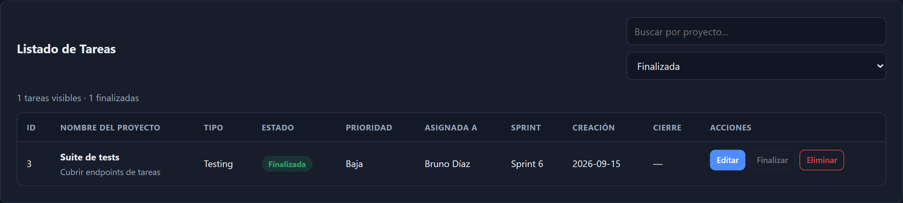
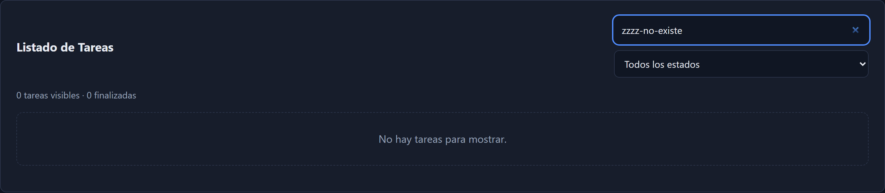

github.com/CamilaVineg/TP5-formulario-React-Vite
| # | Requerimiento | Dónde se implementa | Estado |
|---|---|---|---|
| 1 | Formulario en React con Vite | frontend/src/components/TareaForm.jsx | Cumplido |
| 2 | 12 campos requeridos | db/schema.sql · schemas/tarea.schema.js | Cumplido |
| 3 | Componente «Listado de Tareas» | frontend/src/components/ListadoTareas.jsx | Cumplido |
| 4 | Editar tareas | PUT /api/tareas/:id | Cumplido |
| 5 | Eliminar tareas | DELETE /api/tareas/:id | Cumplido |
| 6 | Finalizar tareas | PATCH /api/tareas/:id/finalizar | Cumplido |
| 7 | Persistencia en SQL / PostgreSQL | db/schema.sql + volumen pgdata | Cumplido |
| 8 | Frontend dentro de Docker | frontend/Dockerfile + nginx | Cumplido |
| 9 | Backend dentro de Docker | backend/Dockerfile + compose.yaml | Cumplido |
| Verificación | Resultado |
|---|---|
| Pruebas de la API (casos correctos e incorrectos) | 24 pasaron, 0 fallaron |
| Ejecutadas a través de nginx (puerto 8080) | 24 pasaron, 0 fallaron |
| Colección Postman completa | 24 peticiones, 37 aserciones, 0 fallos |
| Linter oxlint sobre el frontend | 0 errores, 0 advertencias |
Build de producción (npm run build) | Correcto |
Persistencia tras docker compose down | Datos conservados |
| Errores en consola del navegador | Ninguno |
El detalle de arquitectura, decisiones de diseño y estructura de archivos está en el
README.md del repositorio. Este documento se concentra en la
evidencia de funcionamiento: capturas de la interfaz y respuestas
reales de la API obtenidas durante la ejecución.
Navegador
│ HTTP (puerto 8080)
▼
┌─────────────────────────────────────────┐
│ frontend · imagen Docker │
│ nginx:alpine │
│ ├─ sirve el build de Vite (dist/) │
│ └─ proxy inverso: /api/* ──┐ │
└───────────────────────────────┼──────────┘
│ red interna de Compose
▼
┌─────────────────────────────────────────┐
│ backend · imagen Docker │
│ node:22-alpine + Express 5 │
│ routes → controllers → services → pg │
│ │ │
└──────────────────────────────┼──────────┘
│ protocolo PostgreSQL (5432)
▼
┌─────────────────────────────────────────┐
│ db · postgres:16-alpine │
│ volumen nombrado: pgdata │
│ tabla: tareas (12 campos + auditoría) │
└─────────────────────────────────────────┘
El navegador conversa siempre con localhost:8080. Nginx se encarga de
reenviar las rutas /api/* al backend. Esto tiene tres consecuencias:
/api/tareas,
una ruta relativa, y funciona igual en desarrollo y en el contenedor.localhost:8080
obtiene la aplicación completa y funcional.El backend declara depends_on: db: condition: service_healthy y la base tiene
un healthcheck con pg_isready. De este modo el backend no intenta
conectarse a una base que aún no está escuchando, y evita la clase de errores de
«connection refused» en el arranque.
GET /api/health ejecuta SELECT 1 contra PostgreSQL. Responde
200 {"status":"ok","db":"up"} si la base responde y
503 {"status":"error","db":"down"} si no. No es un stub: valida la conexión real.

El listado es un componente propio, ListadoTareas. Muestra los campos del modelo
y las tres acciones Editar, Finalizar y
Eliminar. Cada fila indica su estado mediante un badge de color: azul para
En Progreso, naranja para Pendiente y verde para Finalizada.

| Campo | Control | Detalle |
|---|---|---|
| Nombre del Proyecto | texto | máx. 120 caracteres |
| Tipo de Actividad | select | Desarrollo · Testing · Diseño · Deploy · Soporte |
| Estado | select | Pendiente · En Progreso · Finalizada |
| Resumen | texto | máx. 200 caracteres |
| Descripción | área de texto | campo largo |
| Prioridad | select | Baja · Media · Alta · Crítica |
| Informador | texto | máx. 120 caracteres |
| Persona asignada | texto | máx. 120 caracteres |
| Precondición | área de texto | campo largo |
| Fecha de Creación | date | obligatoria, formato ISO |
| Fecha de Cierre | date | se habilita solo si el estado es Finalizada |
| Sprint | texto | máx. 40 caracteres |


La fila finalizada muestra el botón Finalizar deshabilitado. Es la misma regla de negocio del backend reflejada en la interfaz: una tarea cerrada no se puede volver a cerrar, porque eso pisaría su fecha de cierre original.


Editar tarea #1 y aparece el
botón Cancelar.
?estado=Finalizada.
La eliminación pide confirmación con el nombre de la tarea y la advertencia de que no se puede deshacer. Al cancelar, la tarea permanece en la base de datos.
Ejecutados con Postman contra http://localhost:8080/api
| # | Operación | Endpoint | Código | Resultado |
|---|---|---|---|---|
| 1 | Healthcheck | GET /health | 200 | API y base de datos operativas |
| 2 | Listar tareas | GET /tareas | 200 | Arreglo de tareas, ordenadas por creación descendente |
| 3 | Crear tarea | POST /tareas | 201 | fecha_cierre: null, created_at generado |
| 4 | Crear ya finalizada | POST /tareas | 201 | Se respeta la fecha_cierre informada |
| 5 | Obtener por id | GET /tareas/:id | 200 | Objeto con los 12 campos |
| 6 | Editar | PUT /tareas/:id | 200 | Campos reemplazados, updated_at cambia |
| 7 | Finalizar | PATCH /tareas/:id/finalizar | 200 | Marca estado y fecha de cierre juntos |
| 8 | Resumen | GET /tareas/resumen | 200 | Totales y cantidad finalizadas |
| 9 | Filtrar por estado | GET /tareas?estado=… | 200 | Solo tareas de ese estado |
| 10 | Buscar proyecto | GET /tareas?proyecto=… | 200 | Coincidencia parcial, sin distinguir mayúsculas |
| 11 | Eliminar | DELETE /tareas/:id | 204 | Sin contenido; la fila deja de existir |
El caso 3 es el que exercise la validación completa del servidor: los doce campos llegan, se validan contra el esquema y se devuelven con los campos de auditoría ya completos.
Los casos no son independientes: el 03 crea una tarea y guarda su
id en la variable {{tareaId}}, y los casos siguientes la consultan,
editan y finalizan sobre ese mismo registro. El 11 la elimina al final para no
dejar filas de prueba en la base.
POST /api/tareas
{
"nombre_proyecto": "Refactor login",
"tipo_actividad": "Desarrollo",
"estado": "Pendiente",
"resumen": "Reescribir el formulario de acceso",
"descripcion": "Separar la validacion de UI de la de negocio en el login.",
"prioridad": "Alta",
"informador": "Carla Mendez",
"persona_asignada": "Vine",
"precondicion": "Acceso al repositorio frontend",
"fecha_creacion": "2026-10-05",
"sprint": "Sprint 9"
}
201 Created
{
"id": 7,
"nombre_proyecto": "Refactor login",
...
"fecha_cierre": null,
"created_at": "2026-10-05T05:41:44.166Z",
"updated_at": "2026-10-05T05:41:44.166Z"
}
La consigna pide poder «finalizar» una tarea. El endpoint correspondiente no recibe cuerpo:
PATCH /api/tareas/8/finalizar
200 OK
{
"id": 8,
"nombre_proyecto": "Refactor login",
"estado": "Finalizada",
"fecha_cierre": "2026-10-05",
"created_at": "2026-10-05T05:41:44.182Z",
"updated_at": "2026-10-05T05:41:44.234Z"
}
El servidor escribe estado y fecha_cierre en la misma operación
SQL. Si el cliente pudiera enviarlos por separado, quedaría la posibilidad de una tarea
marcada como finalizada sin fecha de cierre, o al revés. Concentrar la decisión en el
servidor hace que ese estado inconsistente sea imposible de representar.
La consulta filtra por estado <> 'Finalizada'. Si se llama sobre una tarea
ya cerrada, no hay fila que actualizar y la API responde
404 con el mensaje «Tarea no encontrada o ya finalizada». Así la fecha de cierre
original nunca se pisa por una repetición accidental.
Los tres catálogos están garantizados en dos niveles independientes:
-- backend/src/schemas/tarea.schema.js tipo_actividad: z.enum(['Desarrollo', 'Testing', 'Diseño', 'Deploy', 'Soporte']) estado: z.enum(['Pendiente', 'En Progreso', 'Finalizada']) prioridad: z.enum(['Baja', 'Media', 'Alta', 'Crítica']) -- db/schema.sql CONSTRAINT tareas_tipo_actividad_chk CHECK (tipo_actividad IN (...)) CONSTRAINT tareas_estado_chk CHECK (estado IN (...)) CONSTRAINT tareas_prioridad_chk CHECK (prioridad IN (...))
CHECK, último recurso
frente a escrituras directas o bugs en la capa superior.Ejecutados con Postman contra http://localhost:8080/api
| # | Datos enviados | Código | Causa y respuesta |
|---|---|---|---|
| E1 | tipo_actividad: "Hacha" | 400 | Fuera del enum de Zod |
| E2 | estado: "A medio hacer" | 400 | Fuera del enum de Zod |
| E3 | fecha_creacion: "05/10/2026" | 400 | Debe ser ISO YYYY-MM-DD |
| E4 | nombre_proyecto: "" | 400 | Cadena vacía tras trim |
| E5 | Propiedad sprint ausente | 400 | Campo obligatorio faltante |
| E6 | resumen de 300 caracteres | 400 | Supera el máximo de 200 |
| E7 | Cuerpo que no es JSON | 400 | JSON sintácticamente inválido |
| E8 | PUT /tareas/999999 | 404 | El registro no existe |
| E9 | GET /tareas/999999 | 404 | El registro no existe |
| E10 | DELETE /tareas/999999 | 404 | El registro no existe |
| E11 | PATCH /tareas/1/finalizar sobre tarea ya finalizada | 404 | Re-finalización bloqueada |
| E12 | GET /tareas/abc | 400 | Identificador no numérico |
| E13 | GET /no-existe | 404 | Ruta no registrada |
Las cuatro primeras, para mostrar la estructura del mensaje de error.
POST /api/tareas
"tipo_actividad": "Hacha"
400 Bad Request
{
"error": "Datos invalidos",
"detalles": [
{
"campo": "tipo_actividad",
"mensaje": "debe ser uno de: Desarrollo, Testing, Diseño, Deploy, Soporte"
}
]
}
POST /api/tareas
"fecha_creacion": "05/10/2026"
400 Bad Request
{
"error": "Datos invalidos",
"detalles": [
{
"campo": "fecha_creacion",
"mensaje": "debe tener formato YYYY-MM-DD"
}
]
}
POST /api/tareas
Content-Type: application/json
esto no es un objeto
400 Bad Request
{ "error": "JSON invalido en el body" }
Es un caso distinto al de un body vacío: el servidor detecta que el texto recibido no es JSON antes de intentar validarlo, y responde con su propio mensaje en lugar de una lista de campos.
Un único middleware traduce las fallas internas a respuestas útiles. Se apoya en que
Express 5 envía automáticamente los rechazos de los handlers async al
error handler, lo que evita repetir try/catch en cada endpoint.
| Origen | Código | Respuesta |
|---|---|---|
| Error de validación de Zod | 400 | Lista de campos con el mensaje de cada uno |
| Body JSON inválido | 400 | JSON invalido en el body |
| Id no numérico (Postgres 22P02) | 400 | Identificador con formato invalido |
Restricción CHECK violada (23514) | 400 | Indica el nombre de la restricción |
| Violación de unicidad (23505) | 409 | Registro duplicado |
| Referencia inexistente (23503) | 409 | Referencia a un registro inexistente |
| Registro inexistente | 404 | Tarea no encontrada |
| Ruta no registrada | 404 | Ruta no encontrada |
| Fallo inesperado | 500 | Detalle en el log del servidor, respuesta genérica al cliente |
Ninguna consulta concatena valores. Todas usan marcadores posicionales, que PostgreSQL envía fuera de la línea de comandos:
-- Correcto: el valor viaja como parámetro, nunca se interpreta como SQL
const { rows } = await pool.query('SELECT * FROM tareas WHERE id = $1', [id])
-- Incorrecto: concatenar habilitaría inyección SQL
await pool.query(`SELECT * FROM tareas WHERE id = ${id}`) no se usa
El filtrado por estado y proyecto también se parametrizan, incluso en la condición
ILIKE, porque el valor del comodín se arma en JavaScript y se pasa como
parámetro $1.
src/db/pool.js se limita a crear el Pool; no abre conexiones al
importarse. Cada pool.query() toma una conexión del grupo y la devuelve
automáticamente. Conectarse al importar y olvidar cerrar agota el grupo de conexiones
en pocos minutos. Al apagar el servidor, pool.end() libera todo de forma limpia.
CREATE TABLE tareas ( id SERIAL PRIMARY KEY, nombre_proyecto VARCHAR(120) NOT NULL, tipo_actividad VARCHAR(40) NOT NULL, estado VARCHAR(20) NOT NULL DEFAULT 'Pendiente', resumen VARCHAR(200) NOT NULL, descripcion TEXT NOT NULL, prioridad VARCHAR(20) NOT NULL, informador VARCHAR(120) NOT NULL, persona_asignada VARCHAR(120) NOT NULL, precondicion TEXT NOT NULL, fecha_creacion DATE NOT NULL, fecha_cierre DATE, -- nullable: la tarea puede no estar cerrada sprint VARCHAR(40) NOT NULL, created_at TIMESTAMPTZ NOT NULL DEFAULT NOW(), updated_at TIMESTAMPTZ NOT NULL DEFAULT NOW(), CONSTRAINT tareas_tipo_actividad_chk CHECK (...), CONSTRAINT tareas_estado_chk CHECK (...), CONSTRAINT tareas_prioridad_chk CHECK (...) ); CREATE INDEX idx_tareas_estado ON tareas (estado); CREATE INDEX idx_tareas_proyecto ON tareas (nombre_proyecto);
fecha_cierre admite nulos porque una tarea abierta todavía no tiene fecha de
cierre. created_at y updated_at se registran en la base y no desde la
aplicación, de modo que no dependen del reloj del cliente.
El controlador pg convierte por defecto una columna DATE en un
objeto Date de JavaScript, y al aplicar JSON.stringify se obtiene
algo como "2026-10-05T00:00:00.000Z". Eso mezcla una fecha sin hora con una zona
horaria que no le corresponde: un cliente que la interprete como fecha local puede ver el día
anterior en ubicaciones con UTC negativo.
La solución es configurar el type parser del propio pg en
src/db/pool.js, de modo que la columna llegue al cliente como el texto que
PostgreSQL ya tenía:
import { Pool, types } from 'pg'
types.setTypeParser(1082, (valor) => valor) // OID de DATE
El typeof valor === 'string' interno de PostgreSQL se entrega tal cual, así que
la API responde "2026-10-05" y el contrato con el frontend es simétrico: lo que se
envía es lo que se recibe.
$ docker compose exec db psql -U admin -d tareas -c "SELECT COUNT(*) FROM tareas;" 7 $ docker compose down # se destruyen los contenedores, el volumen permanece $ docker compose up -d $ docker compose exec db psql -U admin -d tareas -c "SELECT COUNT(*) FROM tareas;" 7 ← los datos sobreviven $ docker compose down -v # borra también el volumen
El volumen pgdata almacena los archivos de la base fuera del ciclo de vida del
contenedor. Eso cumple el requisito de que la información persista: los datos sobreviven a la
reconstrucción completa de la imagen.
# backend/Dockerfile FROM node:22-alpine WORKDIR /app COPY package*.json ./ RUN npm ci --omit=dev COPY src ./src EXPOSE 3000 CMD ["node", "src/server.js"] # frontend/Dockerfile — construcción en dos etapas FROM node:22-alpine AS build WORKDIR /app COPY package*.json ./ RUN npm ci COPY . . RUN npm run build FROM nginx:alpine COPY --from=build /app/dist /usr/share/nginx/html COPY nginx.conf /etc/nginx/conf.d/default.conf EXPOSE 80
La imagen final del frontend no contiene Node ni el código fuente: solo los archivos estáticos ya compilados y nginx. La primera etapa compila, la segunda copia únicamente el resultado. La imagen resultante es más pequeña y tiene menos superficie de ataque.
git clone https://github.com/CamilaVineg/TP5-formulario-React-Vite.git cd TP5-formulario-React-Vite cp .env.example .env docker compose up -d --build
| Servicio | Dirección | Notas |
|---|---|---|
| Aplicación web | http://localhost:8080 | Punto de entrada. Funciona completa. |
| API | http://localhost:3000/api | Acceso directo, sin proxy |
| PostgreSQL | localhost:5433 | Puerto 5433: el 5432 está ocupado por un PostgreSQL local |
docker cp db/seed.sql <contenedor-db>:/tmp/seed.sql docker compose exec -T db psql -U admin -d tareas -f /tmp/seed.sql
cd backend npm test # contra :3000 BASE_URL=http://localhost:8080/api npm test # a través de nginx
Salida esperada del segundo caso:
RESULTADO: 24 pasaron, 0 fallaron
cd frontend npm run lint # oxlint → 0 errores, 0 advertencias npm run build # Vite → compila a dist/
En el repositorio, backend/postman_collection.json. Se importa con
File → Import y trae dos carpetas con 11 casos correctos y 13 incorrectos, ya
configurados contra el puerto 8080. Cada petición incluye un script de aserciones, así que
el resultado se lee sin interpretarlo a mano.
Hay que ejecutar la carpeta CASOS CORRECTOS completa y en orden, porque
las peticiones se encadenan mediante la variable {{tareaId}}:
id.{{tareaId}} y no un id fijo.Si se ejecuta E11 sin haber corrido antes el 03 y el 07, la tarea
todavía estará abierta y la API responderá 200 en lugar del
404 esperado.
Resultado obtenido al ejecutar la colección completa:
requests .............. 24 executed / 0 failed test-scripts .......... 24 executed / 0 failed assertions ............ 37 executed / 0 failed
docker compose ps # estado de los servicios docker compose logs -f backend # log del backend docker compose exec db psql -U admin -d tareas # consola SQL docker compose down # detener, conserva los datos docker compose down -v # detener y borrar los datos
5433.--build hay que
esperar el arranque o revisar docker compose logs backend.